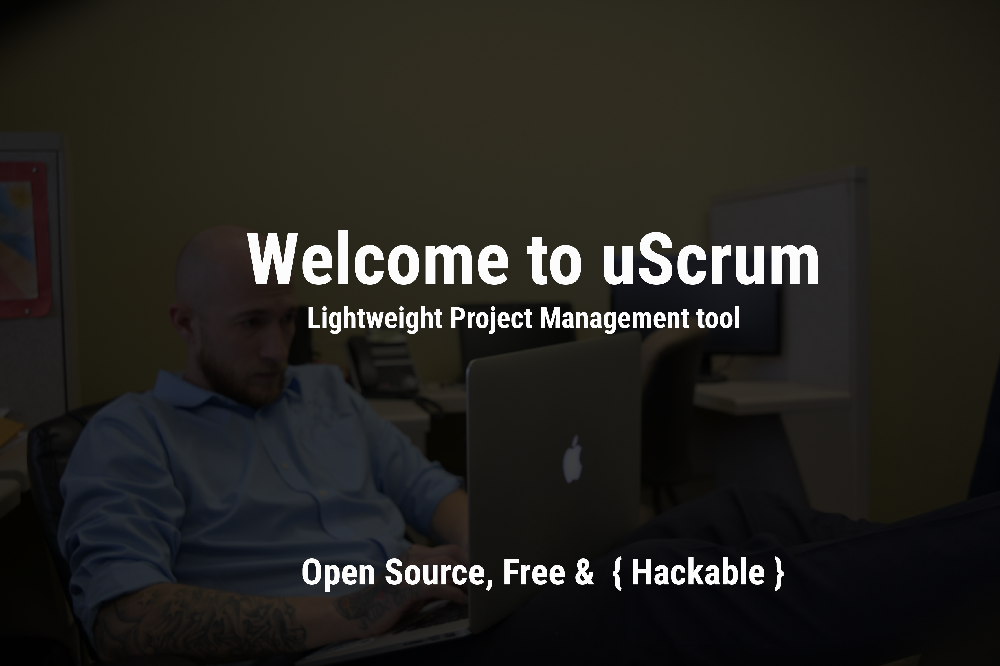

TODO:
Welcome to uScrum, a light weight simple solution to Project management
Back Side
Flip Bitch
WIP:
Why? I created uScrum because Jira/Trello are to much. There needed to be a hackable solution on the market that just managed small projects
COMPLETED:
Best of all, It's Free!!! With no conditions, free integrations and entirely open source. Built by developers, with developers in mind.